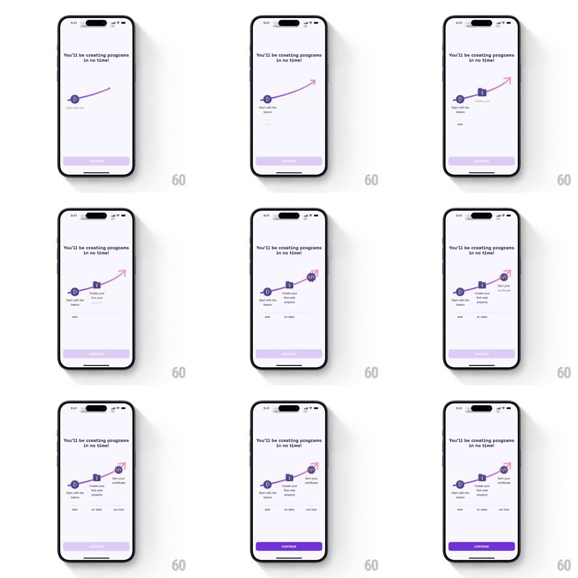

Media
Frame-by-frame

Rebuild this animation 1:1: Mimo's onboarding path - under "You'll be creating programs in no time!", a pink curved path draws itself uphill from bottom-left to top-right while three milestone nodes pop in along it (play icon "Start with the basics", book "Create your first web project", certificate "Earn your certificate"), ending in an arrowhead.

Rebuild this animation 1:1: Mimo's onboarding path - under "You'll be creating programs in no time!", a pink curved path draws itself uphill from bottom-left to top-right while three milestone nodes pop in along it (play icon "Start with the basics", book "Create your first web project", certificate "Earn your certificate"), ending in an arrowhead. ## Integration Integration: stack-agnostic spec - springs given as stiffness/damping, timed motions as duration + curve; map every value to your framework and animation library of choice. ## Scene White screen with bold title, empty canvas that fills with an S-curved pink path, three round milestone nodes with icons and small captions, a purple Continue button appearing at the end. ## Motion spec Pattern: self-drawing path with synced milestone pops. - A short pink dash draws first (~300ms), then the full curved path animates with a trim/stroke-draw from start to end (~2s ease-in-out), climbing toward the top-right arrowhead. - Each milestone node pops in exactly when the drawing tip reaches its anchor: scale 0 -> 1 with spring ~420/18 (~350ms), a white ring pulse, then its caption fades in below (200ms). - The arrowhead at the path end fades + slides in along the curve direction (250ms) as the draw finishes. - The Continue button rises 16px + fades in (300ms) once the path completes; before that a placeholder skeleton bar sits in its place. ## Calibration - Node timing is driven by draw progress, not fixed delays - the pop must coincide with the line tip arriving. - The path is a smooth bezier, not segments; the draw never reverses. ## Reduced motion The full path fades in at once; nodes appear together without springs. ## Don't miss - Nodes sit ON the curve, each at an inflection - the path visibly routes through them. - Icon colors stay monochrome purple; only the path is pink.